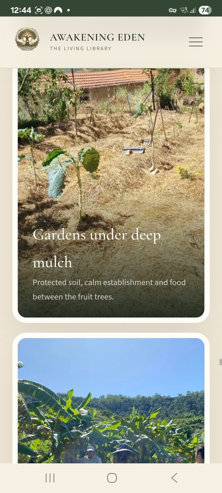
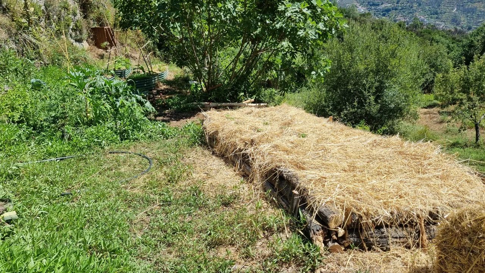

From biomass and living edges to productive beds. Images 10 and 25 show the same raised bed in Oliveira do Hospital, including its finished view.
 01
01Life beneath the citrus trees
Moinhos, Algarve · productive gardens and living soil.
 02
02Abundance close to home
Casa Oasis · climbing vegetables, raised beds and everyday harvests.

03Gardens taking root
Tomar · planted terraces and soil covered with mulch.
 08
08The living edge beneath our feet
Logs and biomass trenches — feeding fertility and making space for mycelium.
 09
09Nourishing the garden from below
Tomar · woody biomass woven into the growing space.
 10
10Room for abundance
Oliveira do Hospital · a natural raised bed on a terrace.

25A growing space, ready for life
Oliveira do Hospital · the finished natural raised bed, protected with straw mulch.
 26
26A living edge in bloom
Wildflowers and pollinator habitat woven into the garden edge.